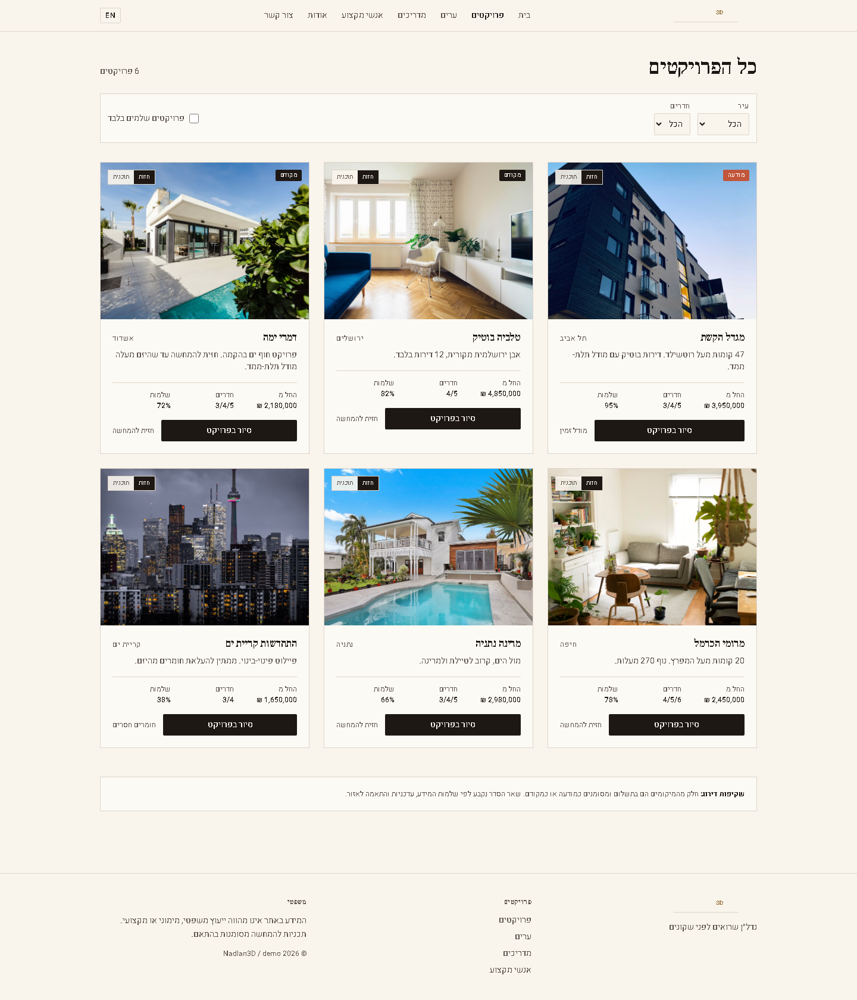
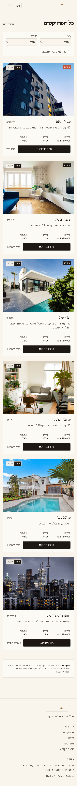

NadLan לא בורח ממילות כסף. אבל כל עמוד כסף, מודעה, עיר, מדריך, כלי ואיש מקצוע חייבים בעלים קנוני, אמת נתונים ושער פרסום. אחרת עמוד חלש יכול לפגוע בעמוד שמכניס כסף.

דסקטופ: יש מבנה כרטיסים ופילטרים בסיסיים, אבל התמונות והאספקה עדיין לא מוכחות כמלאי ציבורי אמיתי.

מובייל: אין גלישה צדדית נראית, אבל חסרים מקור תמונה, טריות, מקור זמינות, ופירוט אמון שמאפשר להפוך את זה למנוע קידום.
שוק נדל"ן עם עמודי כסף קנוניים, כרטיסי נכס אמינים, פילטרים שימושיים, דפי עיר ושכונה, דפי נכס, מפת קישורים פנימית ושערי פרסום לפני כל תוכן חדש.
בעלים קנוני מקור נתונים טריות אמת תמונהלא פותחים אינסוף עמודי פילטרים, לא מאנדקסים עמודים ריקים, לא משתמשים בתמונות כלליות כאילו הן הנכס, ולא נותנים לכותב או לכלי כתיבה לבחור מילת מפתח לבד.
שורות דורשות בדיקה משפטית או מקצועית לפני שהן יכולות להיות תוכן ציבורי חזק.
שורות מחכות למקור רשמי או אמין. בלי זה אסור להציג עובדות חזקות מדי.
שורות דורשות אימות אספקה, נתונים או כוונת חיפוש לפני אינדוקס.
| מסך | מה המשתמש רואה | מה חייב להיות מאחורי הקלעים | שער קידום |
|---|---|---|---|
| עמוד קנייה ראשי | חיפוש, מלאי, ערים מובילות, אמון, מדריכים וכלים. | בעלים קנוני, sitemap, אספקה, קישורים לעיר ושכונה. | כתובת אחת בלבד למילת הכסף הראשית. |
| עמוד עיר | דירות בעיר, נתוני שוק, פרויקטים, אנשי מקצוע ומדריכים. | אספקת עיר, טריות, canonical, קישורים לתמיכה. | תמיכה חוזרת לעמוד העיר, לא מתחרה בו. |
| כרטיס נכס | מחיר, חדרים, שטח, מיקום, תמונה, מקור ופעולה. | מקור תמונה, מקור מחיר, תאריך עדכון, סטטוס תשלום. | הכרטיס לא מייצר מילת מפתח מתחרה. |
| דף נכס | מידע מלא, תמונות, מפה, פנייה, אמון ותוכן סביבתי. | listing_id, keyword_id, schema, מקור, פנייה, מדידה. | מאונדקס רק אם יש מספיק מידע אמין. |
| מצב ריק | הסבר נקי, הרשמה לעדכון, קישורים חלופיים. | סף אספקה, סיבת noindex, יעד קנוני חלופי. | עמוד דק לא נכנס לאינדקס. |
קישור פנימי, מפת אתר ותג קנוני חייבים להצביע לאותה כתובת קנונית.
שילובי פילטרים ריקים או דקים נשארים פנימיים או מחוץ לאינדקס. רק יעד מאושר הופך לעמוד כסף.
סכמת JSON-LD משקפת רק תוכן גלוי, עדכני ואמיתי. אין סימון של תמונות או עובדות שלא רואים בעמוד.
המקורות משמשים לקביעת שערי אינדוקס, canonical, noindex, קישורים ממומנים, סכמות ושפות. הם לא מחליפים את מפת הבעלות של NadLan.
דסקטופ 1440, מובייל 390, פילטר פתוח, פילטר פעיל, מצב ריק, כרטיס ממומן וכרטיס רגיל.
סריקת טקסט מרונדר שאין בה שפת בנייה, הבטחות לא מאומתות או מילים פנימיות.
בדיקת בעלים קנוני, תג קנוני, מפת אתר, הוצאה מהאינדקס כשצריך, וקישור פנימי נכון.